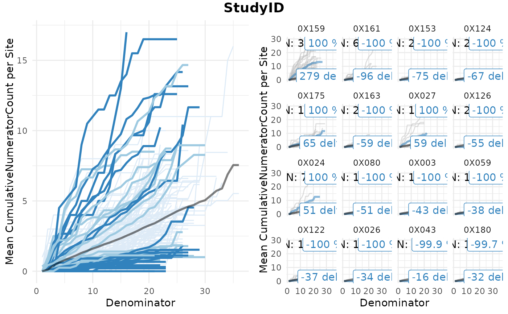

Visualize Simaerep
Visualize_Simaerep.Rdcreate a ggplot2 visualisation for a simaerep KRI
Usage
Visualize_Simaerep(
dfInput,
dfFlagged,
strStudyId = "StudyID",
strScoreCol = "Score",
nSiteMax = 16,
vColors = NULL,
strDenominator = "Denominator",
strNumerator = "Numerator"
)Arguments
- dfInput
data.frame created by
Input_CumCount()- dfFlagged
data.frame created by
Flag_Simaerep()- strStudyId
character, study label, Default: "StudyID"
- strScoreCol
character, name of score column in dfFlagged, Default: "Score"
- nSiteMax
integer, maximum of flagged sites to plot, Default: 16
- vColors
vector, named hex values for every Flag value in dfFlagged$Flag, Default NULL
- strDenominator
vector, label for Denominator x-column, Default: "Denominator"
- strNumerator
vector, label for Numerator y-column, Default: "Numerator"
Details
A widget that creates a simaerep visualisation of group-level metric results. It plots the mean cumulative numerator count per denominator in the left panel and highlights groups based on the over and under-reporting probability calculated by the simaerep bootstrap algorithm. Flagged groups are shown in the right panel including the total numerator counts per single patient.
Examples
dfInput <- Input_CumCount(
dfSubjects = clindata::rawplus_dm,
dfNumerator = clindata::rawplus_ae,
dfDenominator = clindata::rawplus_visdt %>% dplyr::mutate(visit_dt = lubridate::ymd(visit_dt)),
strSubjectCol = "subjid",
strGroupCol = "invid",
strGroupLevel = "Site",
strNumeratorDateCol = "aest_dt",
strDenominatorDateCol = "visit_dt"
)
dfAnalyzed <- Analyze_Simaerep(dfInput)
dfFlagged <- Flag_Simaerep(dfAnalyzed, vThreshold = c(-0.99, -0.95, 0.95, 0.99))
#> ℹ Sorted dfFlagged using custom Flag order: 2.Sorted dfFlagged using custom Flag order: -2.Sorted dfFlagged using custom Flag order: 1.Sorted dfFlagged using custom Flag order: -1.Sorted dfFlagged using custom Flag order: 0.
Visualize_Simaerep(dfInput, dfFlagged)
